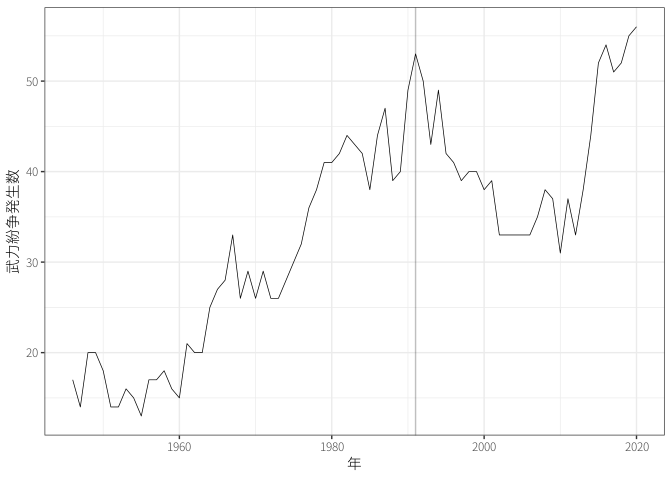
現代の紛争
国際公共政策学
はじめに
平和は協調的な国際関係の前提となる。そこで、平和や戦争の要因を学ぶ。
- 現代の戦争の特徴はなにか？
- なぜ平和ではなく戦争が選択されるのか？
課題文献
1 世界における紛争・暴力
武力紛争を定義し、データセットを構築して、数える試み(多湖 2020, 序章)
1.1 紛争の頻度と形態
どのような紛争が、どの程度発生しているのか？
Uppsala Conflict Data Program (UCDP) のデータ(Gleditsch ほか 2002)
UCDP defines state-based armed conflict as: “a contested incompatibility that concerns government and/or territory where the use of armed force between two parties, of which at least one is the government of a state, results in at least 25 battle-related deaths in a calendar year.”
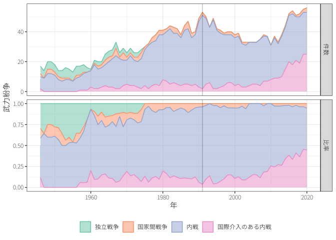
\(\leadsto\)内戦の時代？
Correlates of War (COW) のデータ(Palmer ほか 2022)
- No militarized action
- Threat to use force
- Display use of force
- Use of force, War
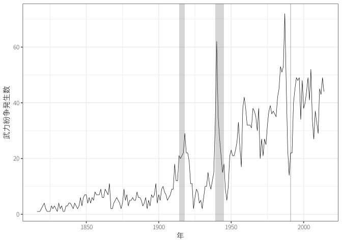
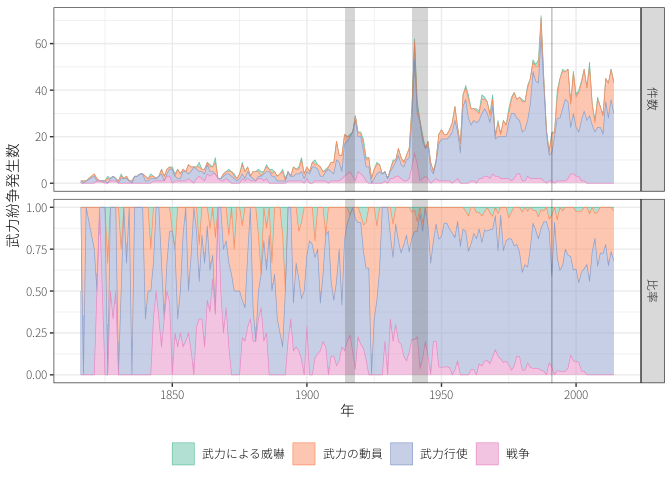
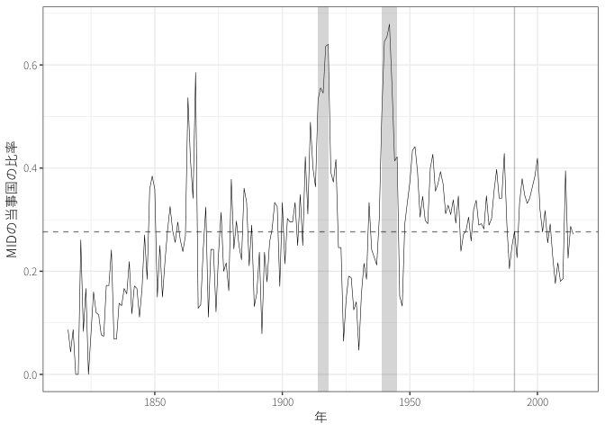
1.2 紛争の原因
なにを巡って集団は争うのか？
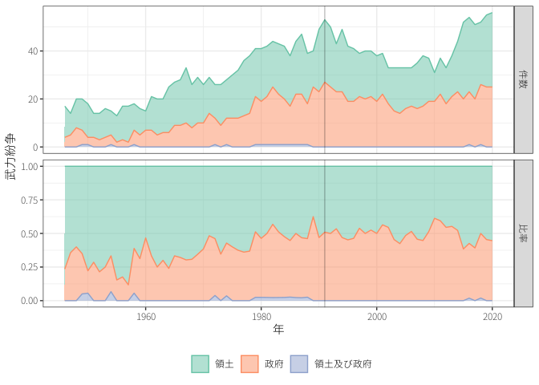
1.3 暴力の空間的分布
どのような国や地域で紛争は頻発しているのか？
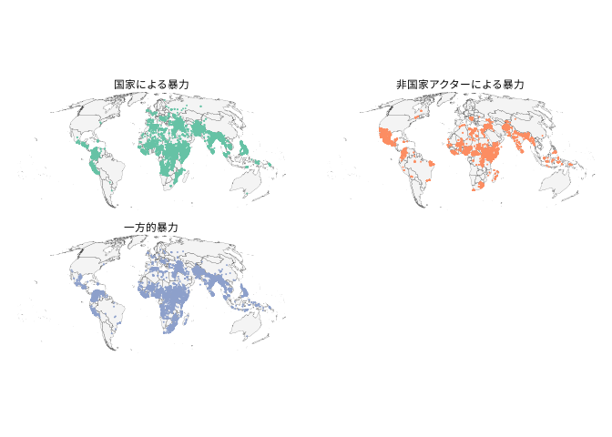
2 戦争と平和について考える意義
国家間紛争が珍しい時代に安全保障について考える意義とは？
- （悲しいことに）2022年以降は当たり前のことかもしれない。
- これまで平和であった\(\neq\)今後も平和である？
- 安全保障で現れる問題は、内戦やテロリズム、国際政治経済においても現れる。
国際関係論の始まり？
- 古代ギリシャのトゥキュディデスが書いた「戦史」
- 1939年に出版されたE.H.カーの「危機の二十年」


戦争とは被害がある（社会的に効率的ではない）。
2.1 軍事支出
なぜ軍事支出を増やすのか？
Stockholm International Peace Research Instituteのデータ
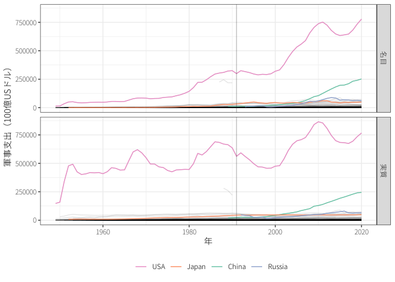
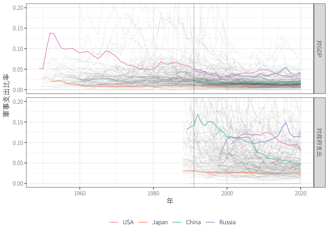
2.2 戦争の被害
戦争ではどの程度の犠牲者が出ているのか？
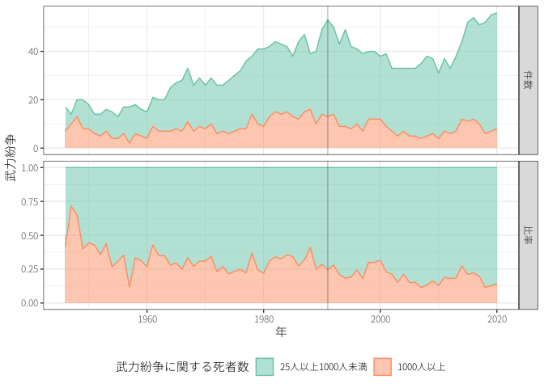
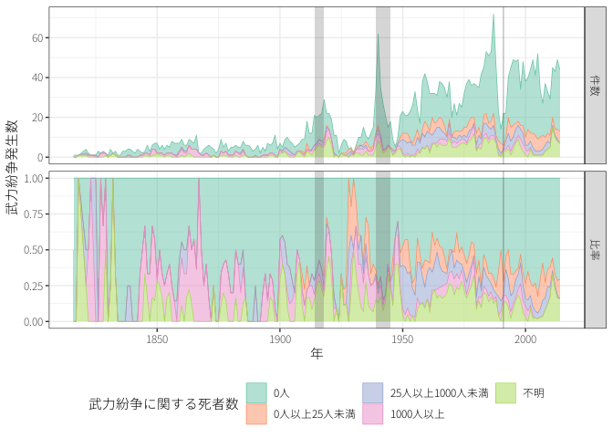
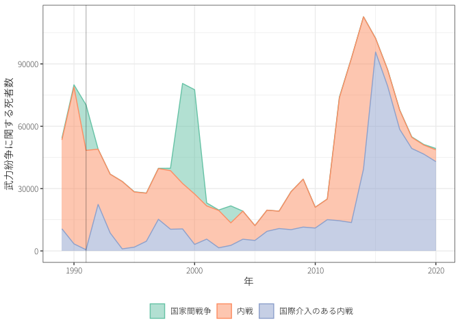
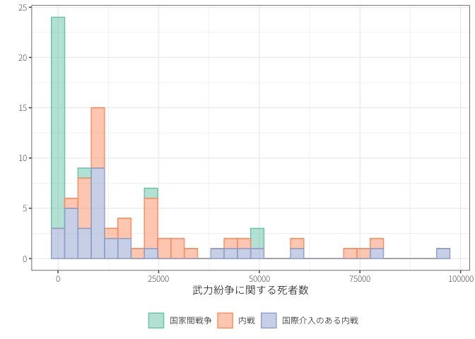
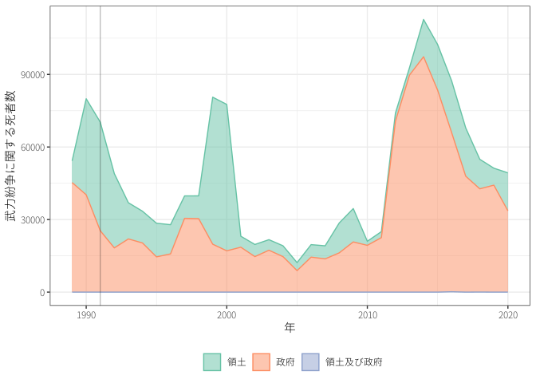

2.3 戦争の期間
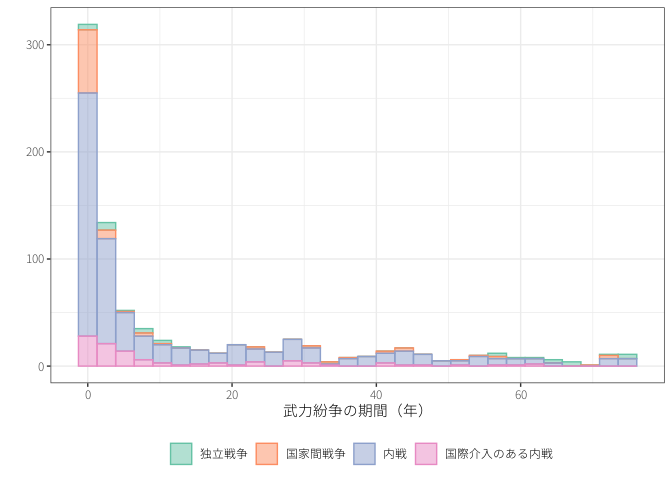
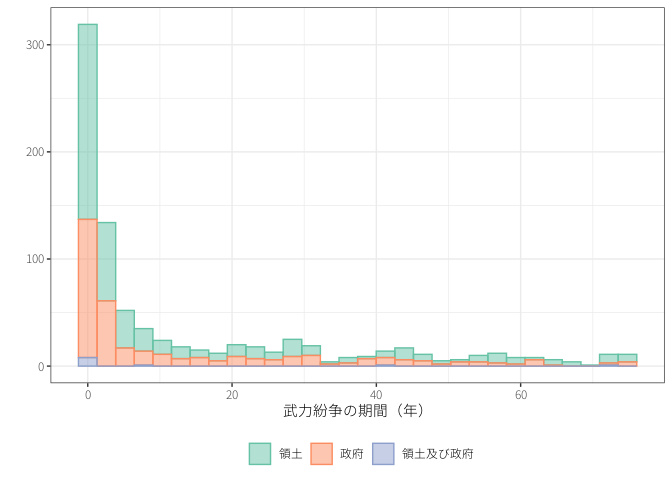
（人を殺してはいけないという一般的道徳以外に）なぜ戦争は望ましくないのか？
3 もう一つの平和
消極的平和 (negative peace)：「戦争が存在しない状態」という平和 (peace)
積極的平和 (positive peace)3：「構造的暴力が存在しない状態」
3 日本政府の提唱する積極的平和主義とは、英訳するとProactive Contribution to Peaceであり、積極的平和とは異なる。
- ヨハン・ガルトゥングは平和をより広く捉えた。
- 構造的暴力：軍事力に限らない貧困や抑圧、差別といった社会的不正義
安全保障 (security) の定義は困難
- 主体、守るべき価値、脅威、手段から捉えられる(防衛大学校安全保障学研究会, 武田, と 神谷 2018, 第1章)
- 軍事的安全保障や伝統的安全保障：国家が軍事力により軍事的脅威から国土や市民を守ること
- 非伝統的安全保障：非軍事的な脅威に対する安全保障
- 例えば、経済安全保障、エネルギー安全保障、食糧安全保障、気候安全保障など\(\leadsto\)結果として手段も非軍事的手段が主
- 人間の安全保障 (human security)：日本政府などは守るべき価値を国家ではなく人間として捉え直し、「生存・生活・尊厳に対する広範かつ深刻な脅威」から守るべきとすると提唱
この授業では軍事的な意味での平和や安全保障について学ぶ
参考文献
Gleditsch, Nils Petter, Peter Wallensteen, Mikael Eriksson, Margareta Sollenberg, と Håvard Strand. 2002. 「Armed conflict 1946-2001: A new dataset」. Journal of peace research 39 (5): 615–37.
Palmer, Glenn, Roseanne W McManus, Vito D’Orazio, Michael R Kenwick, Mikaela Karstens, Chase Bloch, Nick Dietrich, Kayla Kahn, Kellan Ritter, と Michael J Soules. 2022. 「The MID5 Dataset, 2011–2014: Procedures, coding rules, and description」. Conflict Management and Peace Science 39 (4): 470–82.
多湖淳. 2020. 戦争とは何か : 国際政治学の挑戦. 中公新書. 中央公論新社.
防衛大学校安全保障学研究会, 武田康裕, と 神谷万丈. 2018. 安全保障学入門. 新訂第5版 版. 亜紀書房.